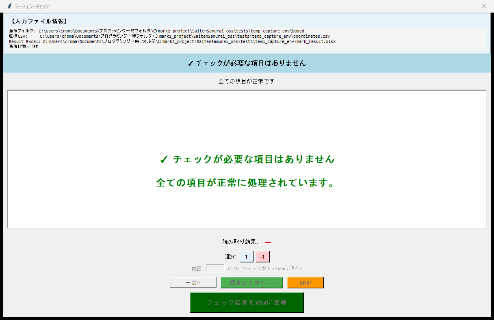

SaitenSamurai v4.3.2 改善項目ビジュアルレポート
生成日時: 2026-02-17 11:22:20
1. 記述式採点プレビューの改善 Improvement
記述式採点のプレビュー画面で、マーク認識枠が描画されていない「クリーンな画像」が使用されていることを確認します。
従来は枠（BOXED）が表示されていましたが、文字の視認性を向上させるため、補正後の元画像を表示するように変更しました。
検証ポイント:
- 画像内に "CLEAN IMAGE (Correct)" という文字（テスト用ダミー）が表示されていること。
- "BOXED IMAGE (Wrong)" ではないこと。
2. マークチェック画面の正答表示 Improvement
マークチェック画面において、正答（Answer Key）の箇所に「赤色の点線枠」を表示する機能です。
ユーザーは採点結果の修正を行う際に、正解の場所を直感的に把握できます。
検証ポイント:
- 正答（Choice 1）の箇所（画面上の矩形）に赤色の点線枠が表示されていること。
- ダミー画像上の枠線（黒実線）とは別に、GUIによって描画された赤枠であること。
